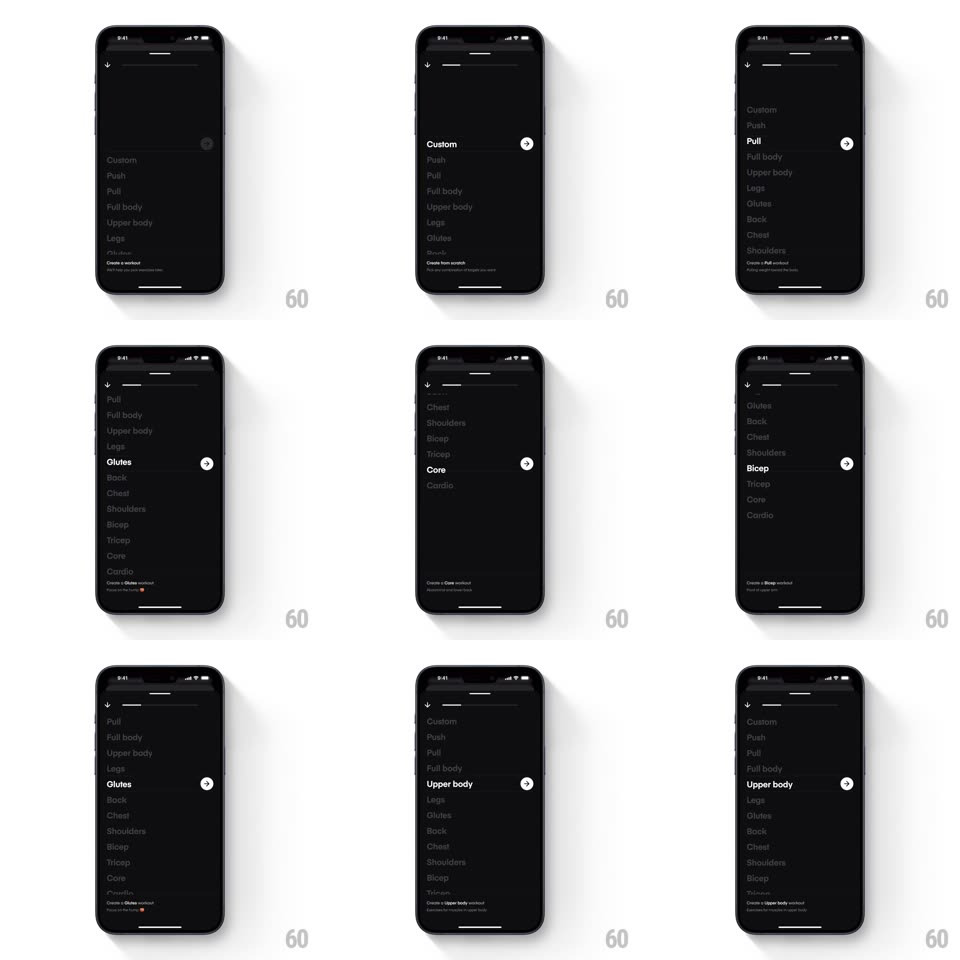

Media
Frame-by-frame

Rebuild this interaction 1:1: Dropset's workout-type picker - a dark sheet lists Custom, Push, Pull, Full body, Upper body, Legs, Glutes, Back, Chest...; scrolling snaps each type into a bolded focus row with a circular arrow button at its right edge.

Rebuild this interaction 1:1: Dropset's workout-type picker - a dark sheet lists Custom, Push, Pull, Full body, Upper body, Legs, Glutes, Back, Chest...; scrolling snaps each type into a bolded focus row with a circular arrow button at its right edge.
## Integration
Integration: stack-agnostic spec - springs given as stiffness/damping, timed motions as duration + curve; map every value to your framework and animation library of choice.
## Scene
Black sheet over a dimmed Workouts screen: a vertical list of workout types in gray, the focused one in bold white with a white circular arrow button right-aligned on its row; a one-line description at the sheet's bottom that changes with the focus ("Create a Full body workout...").
## Motion spec
Pattern: snapping list picker with focus row.
- Scroll: rows glide 1:1 with the drag; the row crossing the center zone bolds and brightens to white (150ms) while the previous focus relaxes back to gray.
- Release: the list snaps the nearest row to center (spring ~340/26, ~280ms) with a haptic tick per row passed.
- The circular arrow button slides in from the row's right edge (100ms) only on the focused row; it pops (scale 0.8 -> 1, spring ~420/20).
- The bottom description crossfades per focus change (200ms).
- Tap the arrow: the row flashes once and the sheet pushes to the workout builder.
## Calibration
- Only one bold row at a time; rows above and below the focus stay readable but clearly secondary.
- The arrow belongs to the row, not the sheet - it travels with whichever row holds focus.
## Reduced motion
List snaps without row emphasis animations; focus changes by color only.
## Don't miss
- The dimmed Workouts screen stays visible behind the sheet - this is a modal picker, not a page.
- Custom sits at top with a plus-style affordance; it behaves like the others in scroll focus.